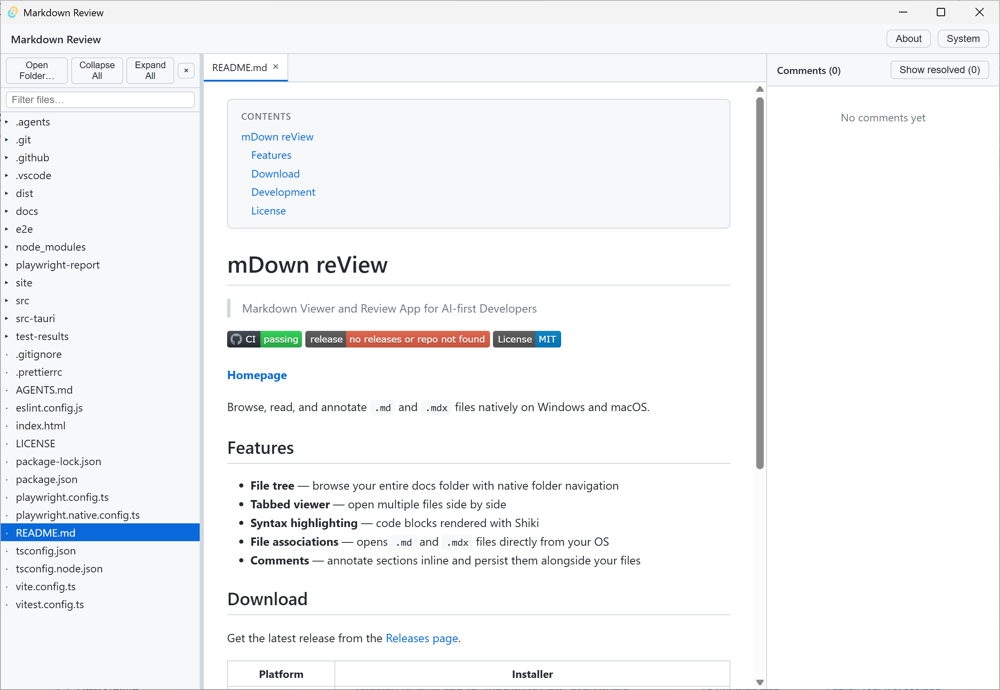

mDown reView — a native desktop app for browsing, reading, and annotating .md and .mdx files on Windows and macOS.

Browse your entire documentation folder with native folder navigation.
Open multiple files side by side in a clean tabbed interface.
Code blocks rendered with accurate syntax highlighting via Shiki.
First-class support for Markdown and MDX with OS file associations.
git clone https://github.com/dryotta/mDown-reView
cd mDown-reView
npm install
npm run tauriRequires Node.js LTS and Rust stable.